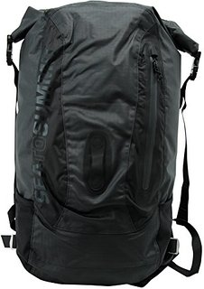

Obligatory Disclaimer: I get nothing at all for the recommendations/links on this page, and just because I link to amazon doesn't mean I even suggest buying from amazon (you may find better prices elsewhere). I maintain this list solely for my own records and in the hope that someone will find the information useful. This page is limited to describing gear that I actually own and endorse, not gear that I want.
Gear Axioms
-
For trek and travel, the most useful gear is suitable for multi-sport usage. You should not need different gear for each of skiing, trekking, bikepacking, etc.
-
Long-term travel is a sport in itself, and regardless of whether you enjoy other outdoor activities, if you are vagabonding around the world you will eventually find yourself trekking across a city in a downpour. Miles from any place you can call your home and completely ignorant of how to say "laundry" or "dryer" in Swahili, you will no doubt wish you had waterproof or quick-dry clothing.
-
Whether it's a backpack or a jacket, good gear is waterproof, waterproof, waterproof. Better to spend the money upfront for peace of mind, and forget about additional pack covers or internal dry sacks.
-
Good gear is lightweight but seriously sturdy. Ultralight stuff is all very good, but should last for more than just a few seasons of hard use.
-
In outdoor equipment more than in most things, you get what you pay for. If you use your equipment hard and often then don't be cheap (unless you enjoy buying it over and over again). You can stay warm layering up with 5 cheap hoodies, or one decent down garment. So how much room do you have in your backpack, and over the space of a long trip how much weight do you fancy schlepping?
-
Keep in mind that prices act nonlinearly at the top of the line. For best-in-class gear, you might sometimes have to pay twice as much even if it's only 20% better than the next in line, and so on.
-
Material science is weird, wonderful, and complicated. Especially if you want to save money by buying the right equipment the first time, take some time to learn about the different properties of wool vs cotton vs down, eVent vs goretex, etc.
Hard Shells
| Pants: Outdoor Research Mentor. Heavy but bomb-proof, and includes some built-in suspenders and a belt. Full side zips for getting on without taking your boots off. These are suitable for deep snow and very cold, windy conditions. They also work great for hard rain, but they aren't exactly breathable and you'll be very toasty if you try to wear them in the tropics. | |
| Jacket: Rab Latok Jacket. Expensive but incredibly well-designed. All pockets are high on the body, making it easy to wear with a climbing harness or leaving pockets easily accessible even when you're riding a bicycle or motorcycle. Includes 2 normal and 2 "napolean" style pockets, as well as an internal pocket on each side of the breast. The hood is huge, easily accomodates all kinds of helmets regardless of whether you're kayaking, cycling, or climbing. Fit is basically athletic, so if you're downhill skiing size it to fit. Go one size up if you want to put a large down jacket under this thing. After experimenting with lots of material, eVent fabric is my favorite combination of waterproof/breathable. Bonus: color matches beautifully with the gaiters I recommend. |
Soft Shells
Backpacks
Constraints: I prefer completely waterproof backpacks in the 35-45L range, which tend to be expensive, hard-to-find technical mountaineering packs, and are usually top loaders. On the bright side, these packs require no pack cover. If you only carry a small bivvy sack for sleeping, and want a pack you can keep outside the tent even in a storm.. look no further. These both work well for bike-packing.. just toss it over your back panniers and don't worry about mud/water getting thrown up on it. These packs are fairly small, partly to help me remember my ambitions of traveling light. Nevertheless, I almost always end up with improvised pockets] strapped to the exterior. This all works well enough if your gear is lightweight, but keep in mind the shoulder-straps are not huge and can be uncomfortable if you've drastically overpacked. These are not 70L expedition packs for the AT, the PCT, etc!
|  | Sea-to-Summit Flow 35L (pictured left). Waterproof top-loader. Shape is rectangular when fully packed. This pack can supposedly carry skis but I think it would put a lot of wear and tear on the bag, and probably only last a few seasons. Very comfortable if not overpacked. This pack is extremely waterproof, probably up to a brief submersion. |

|
Ortlieb Elevation pro 32/42L (pictured left). Waterproof top-loader. Shape is cyllindrical when fully packed. This pack has strong daisy chains running through the outside, and is suitable for strapping on ski's or a survival rifle. Without Ortlieb add-ons or carabiners it doesn't have any external mesh pockets, and doesn't have a good spot for a waterbottle. This pack is very waterproof but not as submersible as the sea-to-summit above because it cinches shut without a rolling top. It must be angled correctly, that is not upside down or sideways with respect to falling rain. |
For improvising additional external pockets that change pack capacity, I strongly recommend using bags made for carrying crampons, such as the quality bags made by Mammut, Petzl, or Outdoor Research.
Tents
Constraints: Sometimes I carry a tent around with me for months without getting a great opportunity to use it, so my tent needs to be very lightweight. Sometimes I catch a flight every other week and whether I'm checking my luggage or whether it's carry-on I might over-pack the bag, so I don't like worrying about breaking and replacing tent poles. On a bicycle tour when I do use my tent, I'm often stealth-camping in privately owned corn fields or a small patch of brush in an otherwise urban environment. Sometimes I'm sleeping on the side of mountains where there's very little flat real-estate available, so I need a tent that's as small as possible. Sometimes I'm stuck in my tent for hours waiting for the rain to stop, so my tent needs to be big enough to read a book inside, or use a laptop. One person shelters in the category of "bigger than bivvy" but "smaller and easier to setup than a tarp" are rare, but they are out there. Lightweight tents are inevitably single-wall, so condensation can be a problem. These things have to be stretched as tight as a drum to shed water properly, and even then you'll still get wet in any long hard deluge.
Solutions: Nemo's Gogo Elite (pictured below). This is an ultralight, bivvy-inspired pseudo tent. There are no tent poles, rather it uses "air beam" technology. In other words, the large arch is an inflatable tube, capable of withstanding such high pressure that it functions as a respectable structural element.1 The GoGo is the smallest and lightest tent I've ever owned, and also has probably the shortest setup time. Still, I do wish it had a second inflatable arch down by the feet.
A similar design that uses a tripod pole system instead of air beams used to be manufactured by Black Diamond as the "lightsabre bivvy" (image below). I've personally used this tent everywhere from Kilimanjaro to the Sahara. It lasted for many years through all kinds of hell before it finally began to show signs of normal wear and tear from UV exposure. Sadly the lightsabre is no longer on the market, or perhaps just very hard to find lately. I wouldn't necessarily suggest buying one used, but it's worth keeping an eye out for it in case resellers start to move them again. The tripod system uses two poles for the arch at the head, and one pole for the arch at the foot. This tent is probably more suitable for very high winds (think Patagonia) than the Gogo, but on the other hand the Gogo airbeams can never snap. Use your discretion! I cannot recommend this tent for tall people (6+ feet), you will have a lot of trouble getting in and out of it.
Note: The "bipod bivvy" and the "spotlight bivvy", both also by Black Diamond, are similar looking and are probably good minimalist designs. However, since they drastically cut the amount of occupant headroom, there is not enough space for reading a book or using a laptop. I consider this too minimalist and therefore cannot recommend those designs.
Misc Gear
-
Gaiters: Rab Latok Alpine Gaiters. A good pair of gaiters is priceless, the most multi-sport of all multisport gear. These will serve you well in the snow or in the jungle, protecting your legs and expensive technical pants from thorns, snakes, leeches, dog bites, etc. Maybe you're cycling in tall wet grass or trying to protect your legs from mud without adding the extra weight of cycle fenders. Maybe you're riding a horse, or maybe you're going somewhere a little chilly but can't justify packing another pair of long pants.. whatever the case you should take these everywhere. I recommend the large size because a medium is pretty snug on my legs even without big boots / long pants. Bonus: they match perfectly with the Rab Latok jacket mentioned in the hardshell section
-
Sunglasses: Julbo Sherpa Retros. These things will make you look like a cool mountaineer from the 70s. Besides that, they are cheap compared to most high end athletic eyeware, and probably the only pair of glasses I've ever owned that are comfortable to wear for hours on end. The over-ear bits are curved, preventing them from falling off. These glasses are comfortable in very cold conditions without making your face cold, and there's not a lot flexing rubber parts to break off in below-freezing temperatures. The covers on the side make them suitable not only for avoiding snow-blindness on glaciers, but an excellent choice for dusty, windy conditions on the beach or avoiding bug-in-the-eye catastrophes during downhill mountain-biking.
-
Gloves: Mountain Hardwear Hydra Lite. These are super comfortable and cut the wind, but only barely waterproof. These gloves are most suitable for handling rope or doing camp chores in inconveniently cold (but not challengingly frigid) conditions. Get the large size if you want to wear another glove beneath them. Get another glove to go over them if you require something completely waterproof.
-
Trekking poles: Black Diamond trail shock pro. I've managed to break a few of these falling on the trail, but since I figure it saved me from breaking my tailbone I won't complain. Bonus: these are very useful when you're setting up a tent in rocky areas.
Sleep systems
Sleeping pad (3 season): I like the Nemo Zor Short. No joke, it's short.. only three quarters the length of your standard sleeping pad. Lightweight and low-volume when compressed, comes with a patch kit if you should puncture it.
Sleeping pad (cold): The ultralight pad above is not suitable for ridiculously cold temperatures. When chilly comes to cold I think the volume and the cost of inflatable mattresses suggests that one gets the most bang for ones buck by keeping it simple. I use thermarests for sleeping on snow, and probably wouldn't consider getting anything else unless I was going to sleep outside on snow for more than a week straight.
Sleeping bags (3 season):
Sleeping bags (cold):
Electronics
For cameras, battery packs, solar panels, etc see my mobile electronics and power page.
Cook Systems
Shoes and Boots
| The Salomon Quest 4d GTX 2 is the gold standard for all-around excellence in hiking/trekking, and I understand it's often used by military/police forces now, or just as a work boot for people who are standing on their feet all day. These are waterproof enough to walk in heavy rain for 10 hours and stay dry (at least when the seal on them is new), and if you need to walk in a shallow creek for long distances never fear. The ankle support is crucial for trekking with a really heavy pack. Unlike many other boots in this class, these are suitable for use in the hot tropics and the sole will not delaminate. If it's not clear from the picture, you should know these are huge clunky affairs, but at least way smaller than real mountaineering boots! | |
| For higher altitudes, extended stays in seriously cold alpine conditions, or snow sports, I'm liking the Sportiva Spantik. To be honest I haven't used these yet in conditions that really required them, but I'm going to recommend them anyway based on the ridiculously comfortable fit and clever design. The lace-system is knotless, can be managed with gloves or mittens on, and even works with one hnd tied behind your back. The inner-boot comes out, which will help you avoid kicking snow and mud all over the inside of a tent without freezing your feet. These are comfortable to walk in, no more frankenstein stumbling! These are crampon compatible (obviously) and some people have reported using them for ski mountaineering with special bindings. |
Biking
| Surley big dummy is my go-to "expedition bike", and suitable for carrying a ridiculous amount of cargo in places where it is a long, long way between places to resupply food/water. It's big enough so that you better forget about chucking it over barbwire fences and taking it through extremely difficult terrain, but the gear ratio means that one need not be afraid of big hills (I crossed the alps on this thing!) | |
|
Surley's Long Haul Trucker is my smaller bicycle, |
- Now instead of worrying about breaking tent-poles you can worry about losing your tent pump. Oh well, it's always something! ↩